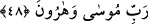

48. “Musa ve Harun’un Rabbine iman ettik.”
Bu ifâde, Fir’avn’u kasdetme ihtimâlini ortadan kaldırmak için zikredilmiştr. Çünkü
câhil kavmi onu böyle isimlendiriyordu. Şâyet îman eden sihirbazlar “Âlemlerin
Rabbine iman ettik” deyip orada dursalardı Fir’avn ‘Âlemlerin rabbi benim. Onlar
beni kasdettiler.’ derdi. Bu yüzden onlar “Musa ve Harun’un Rabbine” diye eklediler.
Böylece yanlış anlama ihtimâli ortadan kalkmış oldu.
Buhârî, Rikak, 28
Deylemî, hadis no: 7446